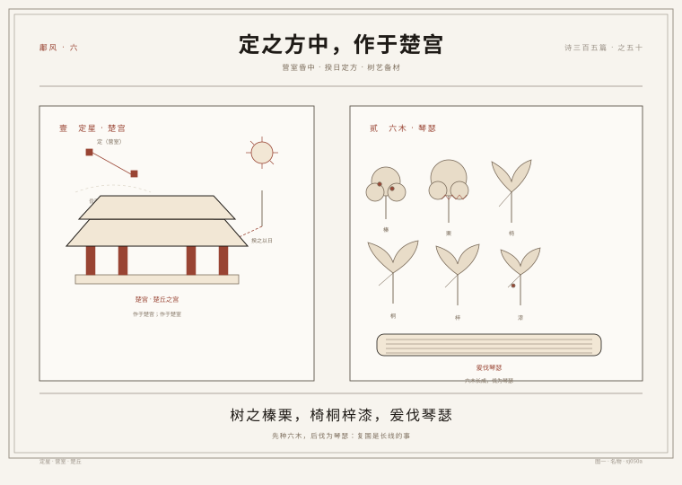
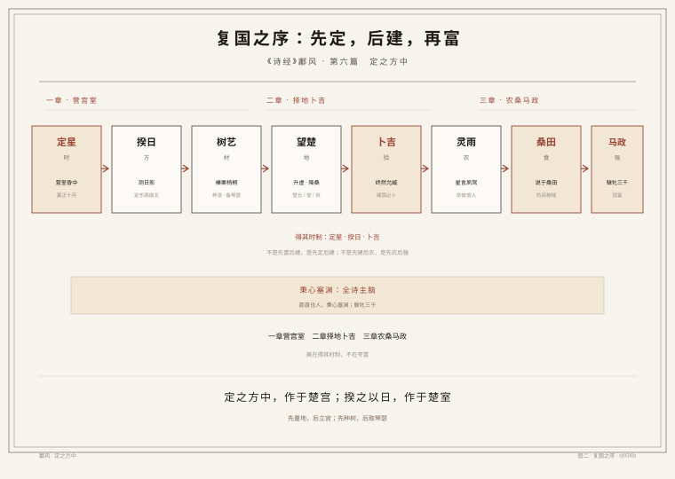

第五十篇 定之方中
鄘风 · 之六 SJ050
朗读 · 普通话
依经文正文朗读，句读从文；不配乐、不改速、不加拖腔。全库同一音色（豆包 TTS），非播音员录制。
一 解题
诗三判：
- 谁在说：卫人，或楚丘营建的参与者、旁观者。口吻是赞美，不是文公自夸；诗里没有「我」，只有「命彼倌人」的第三身。
- 说什么事：卫为狄所灭，东徙渡河，野处漕邑；齐桓公攘狄而封卫；文公徙居楚丘，建城市、营宫室、种树、卜吉、劝桑、养马；国家殷富。
- 为何编在此：鄘风第六篇。前五篇写乱：守、讳、刺、桑间、名分；此篇写乱后之生。鄘风不是只有丑，还有重建；此篇是「破后之立」。
《毛序》：「《定之方中》，美卫文公也。卫为狄所灭，东徙渡河，野处漕邑。齐桓公攘戎狄而封之。文公徙居楚丘，始建城市而营宫室，得其时制，百姓说之，国家殷富焉。」
朱子《诗集传》：「定，北方之宿，营室星也。此星昏而正中，夏正十月也。于是时，可以营制宫室，故谓之营室。楚宫，楚丘之宫也。」
本库的看法：这首诗的贵重，不在「騋牝三千」的富，在「定之方中」四个字。
先把方位定正，再建宫室；先揆日，再种树；先卜吉，再劝桑。复国不是喊出来的，是一步步量出来的。
二 经文
第一章
定之方中，作于楚宮。揆之以日，作于楚室。樹之榛栗，椅桐梓漆，爰伐琴瑟。
第二章
升彼虛矣，以望楚矣。望楚與堂，景山與京。降觀于桑，卜云其吉，終然允臧。
第三章
靈雨既零，命彼倌人。星言夙駕，說于桑田。匪直也人，秉心塞淵，騋牝三千。
分章：三章，章七句。
章末韵：
- 一章：中、宫（冬部）；日、室、栗、漆、瑟（质部）。
- 二章：虚、楚（鱼部）；堂、京、桑、臧（阳部）。
- 三章：零、人、田、渊、千（真部）。
三 韵读
| 一 |
中、宫；日、室、栗、漆、瑟 |
冬部；质部 |
| 二 |
虚、楚；堂、京、桑、臧 |
鱼部；阳部 |
| 三 |
零、人、田、渊、千 |
真部 |
一章两韵：中、宫冬部；日、室、栗、漆、瑟质部。二章两韵：虚、楚鱼部；堂、京、桑、臧阳部。三章一韵：零、人、田、渊、千真部。三章由宫室而地，由地而农，韵亦由分而合。
四 字义与名物
字义
- 定（dìng）——星名，营室；昏时正临四方，营宫室之候。
- 方中——昏正四方，正当其中；夏正十月。
- 楚宫——楚丘之宫；楚丘，卫邑。
- 揆（kuí）——度、测量；揆日，度日影以定东西南北。
- 树——种植。
- 榛、栗、椅、桐、梓、漆——六木；果、材两用。
- 爰——曰、于是；此句言六木长成，可伐为琴瑟。
- 虚——漕虚、故城；一说大丘。
- 堂——楚丘旁邑。
- 景山——大山；一说「景」为测景。
- 京——高丘。
- 臧——善。
- 灵——善；灵雨，好雨。
- 零——落。
- 倌人——主驾者、小臣。
- 星言——见星；言，焉、而。
- 夙——早。
- 说——舍止、休息；一读 shuì。
- 匪直也人——不只是庸常的君主；毛传「非徒庸君」。直，特、徒。
- 秉心——持心、操心。
- 塞渊——充实而深沉；塞，实；渊，深。
- 騋（lái）——马七尺以上。
- 牝——母马。
名物
- 定星 /
营室——营室二星，昏中于夏正十月；古人以此候土功、营宫室。
- 楚宫 /
楚室——楚丘之宫、居室；楚丘在今河南滑县一带。
- 六木——榛、栗、椅、桐、梓、漆；种在宫中，长成伐为琴瑟。椅，山桐子／梓属。
- 桑田——桑林与农田；劝农之所。
- 騋牝——七尺以上的马与母马；马政，国力之窗。
五 今译
第一章
定星昏时正临四方，在楚丘建宫室。测度日影定方位，在楚丘建居室。种下榛、栗、椅、桐、梓、漆，将来伐取做琴瑟。
第二章
登上那漕邑故城，眺望楚丘。望见楚丘与堂邑，大山与高丘。下到桑田察看，占卜说吉利，最终确实安善。
第三章
好雨已经落下，命令那主驾的人；见星早起驾车，止息在桑田。不只是庸常的君主，他持心充实深沉；高马与母马有三千。
六 章旨
一章：定星昏中，营宫室；揆日定方，种树备材。
「爰伐琴瑟」把「建」落到「用」——宫室不是摆着看的，是要有琴瑟之声。
二章：登漕虚，望楚丘；望堂邑、大山、高丘；降观桑田；卜吉。
由「营建」到「择地」与「验吉」；建国必卜，不是随意。
三章：灵雨、倌人、夙驾、桑田；由宫室到农桑。
「秉心塞渊」点出文公之心；「騋牝三千」点出国之富。富不是空来，是从心与农桑来的。
三章合看：先定方位，再定人心；先有宫室，再有桑田；先有桑田，再有马匹。
复国之序，就是此诗之序。
七 诗教
- 兴：定星、六木、桑田、灵雨、马匹，皆物；由物见政，由政见心。
- 观：观复国之序：时→方→材→地→验→农→食→强；不是空喊「中兴」，是一步一步做。
- 群：可与「灾后重建、从零开始」的人同群；也可与「只夸结果、不问步骤」的人同群。
- 怨：此篇无怨；若有，在「匪直也人」一句：人知其富，未必知其心；「秉心塞渊」才是根。
八 分寸与边界
- 不可把「定之方中」当吉日吉时。它是营室星昏中，夏正十月，是施工时令；不是随便挑的好日子。
- 不可把「楚宫」当楚国宫殿。楚丘是卫邑，楚宫是楚丘之宫；解作楚国，全篇错位。
- 不可把「美卫文公」读成全面歌颂。诗美其复国、时制、殷富，不等于美其一切；《载驰》等尚见卫事之难。
- 不可把「騋牝三千」只当夸张。它是马政、国力之窗；「三千」不必坐实为确数，旧注亦有「过礼制」之议。
- 不可把「匪直也人」译成「不是正直的人」。直，特、徒；毛传「非徒庸君」，下接「秉心塞渊」。
九 存疑
- 诗旨与旧说：毛序美卫文公；朱子从之；郑笺言「马有三千，虽非礼制，国人美之」。本库取「美复国、美得其时制」，不把「美」扩大到全人。
- 文字异文：「终然允臧」或作「终焉允臧」；「爰伐琴瑟」或作「琴桑」（形近、音近之讹）；「騋牝三千」或作「牝三千」；「匪直也人」断句、训诂多歧。
- 名物歧解：楚宫，毛传「楚丘之宫」，郑笺「宗庙」；楚室，毛传「室犹宫」，郑笺「居室」；景山，毛传「大山」，朱子「测景」；倌人，毛传「主驾者」；说，毛传「舍止」，郑「辞说」。
- 年代与作者：诗无作者。事在鲁僖二年（前
658）齐桓公城楚丘、文公徙居；毛序系于文公。诗或末年追美，或卒后为之，具体年代存疑。
- 编次之疑：为何次《鹑之奔奔》？由宫室之丑转到宫室之建，由名分之坏转到名分之复；一破一立。也可能因卫事类聚，《鄘风》篇次未必有严密义例。
十 跨典
- 《鄘风·载驰》：同写卫亡之后。许穆夫人奔走唁兄，是「急」；文公楚丘重建，是「缓」。一悲一盛，一女子一国君，皆见卫之未亡。
- 《鄘风·鹑之奔奔》：前篇写宫室里的名分之坏，此篇写宫室的重建；一刺一美，一破一立。两篇对读，才见「宫室」二字的两副面孔。
- 《左传·闵公二年》《僖公二年》：狄灭卫，宋桓公迎遗民渡河，立戴公；戴公卒，文公立；齐桓公城楚丘而封卫。此诗即写其事。
- 《小雅·斯干》：「筑室于兹，乃安斯寝。」同写宫室之建；《斯干》颂周室，此篇美卫复。一在中原之盛，一在亡后之兴。
- 《大雅·绵》：古公亶父迁岐，「筑室于兹」。周之迁岐，卫之迁楚丘，皆是「重建」；一开王业，一续宗祀。
- 《周礼·考工记·匠人》：「匠人营国，水地以县，置槷以县，视以景。」此篇「揆之以日」，正是揆日定方之法；诗与礼书，可互证。
十一 双卡与图
双卡五对：
| 定之方中（营室昏中，时令） |
定星正中（吉日？） |
| 楚宫（楚丘之宫） |
楚国宫殿（错） |
| 揆之以日（测日影定方） |
看太阳选日子（误） |
| 景山（大山） |
景山公园（今名误植） |
| 匪直也人（非徒庸君） |
不是正直的人（误） |

图一 · 定星、楚宫与六木 名物图

图二 · 复国之序 义理图
读图三处：
- 星与宫：图一左画定星（营室）与楚宫，旁标「揆之以日」。星定其时，日定其方，宫成其居。
- 六木与琴瑟：图一右画榛、栗、椅、桐、梓、漆六木，下接琴瑟。种树不是点缀，是备材；「爰伐琴瑟」把复国落到礼乐。
- 八节点：图二从定星到马政，八节点一线；「秉心塞渊」为根。先定后建，先农后强，是此诗的次序。